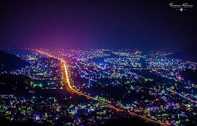

About Butwal
 Butwal is a dynamic city located in the Lumbini Province of Nepal. It serves as a major trade hub connecting the Terai plains with the hilly regions of Nepal. Known for its cleanliness, greenery, and rapid development, Butwal is one of the fastest-growing cities in the country.
Famous Places Near Butwal
Here are some of the most popular tourist attractions in and around Butwal:
Travel & Stay in Butwal
Butwal is well connected by the East-West Highway and Siddhartha Highway. The nearest airport is Gautam Buddha International Airport, just a 35-minute drive away.
Visitors can find comfortable hotels, lodges, and guesthouses throughout the city, ranging from budget-friendly to luxury options.
History of Butwal
Historically, Butwal was a small trade settlement between India and Nepal’s hill regions. Its location along the Tinau River made it a natural market and resting point for travelers.
In recent decades, Butwal has transformed into a modern urban area, playing a crucial role in Nepal’s economy, education, and development.